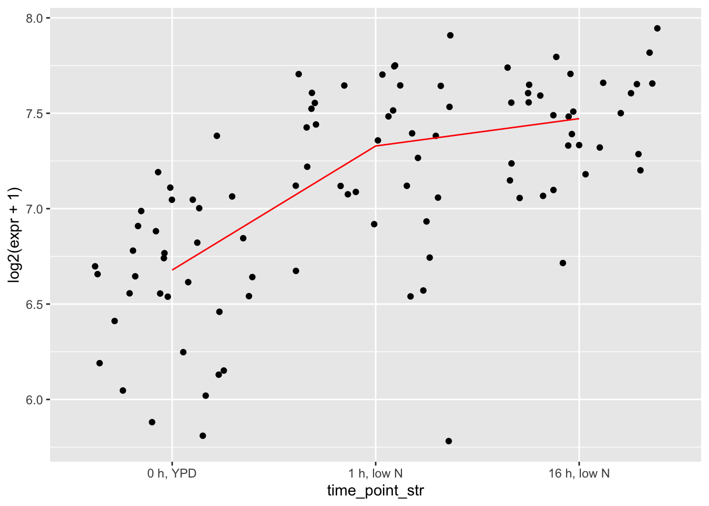
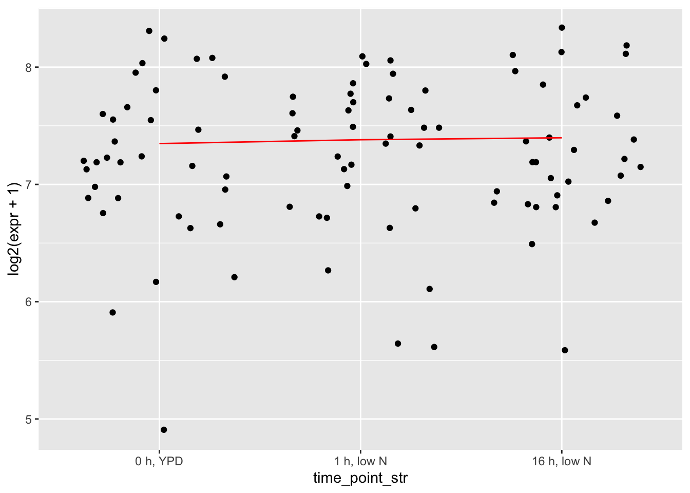
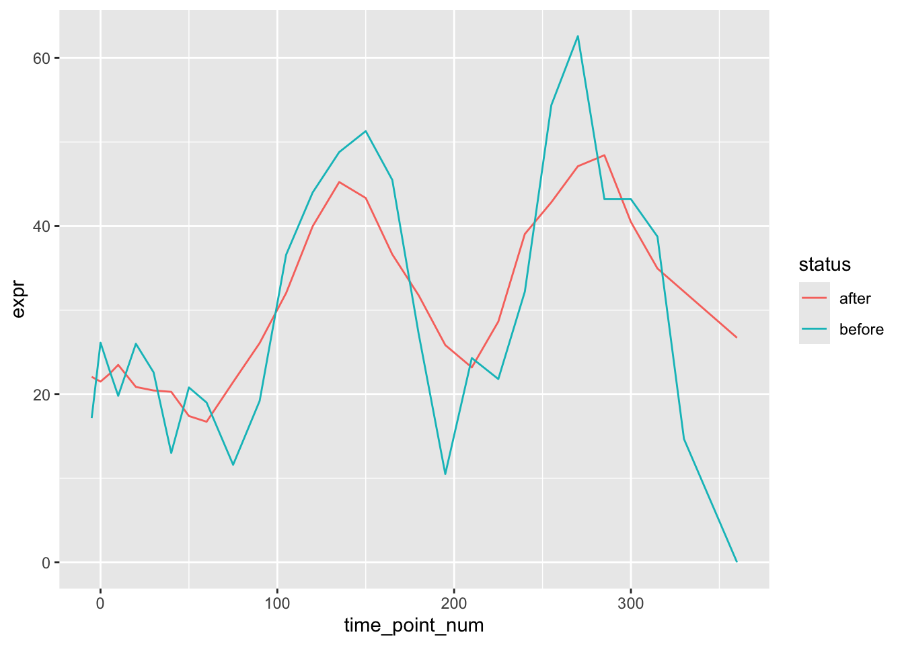

Functions used in multiple scripts
The actual version of these functions that is sourced in the other .Rmd scripts is functions_for_figure_scripts.R. This is the webpage-ready version displying code for each function with acompanying unit tests
sapply(c("dplyr", "purrr", "tidyr", "ggpubr", "readr",
"data.table", "ggplot2", "data.table",
"matrixStats", "ggpattern", "WGCNA"), require, character.only=TRUE)## dplyr purrr tidyr ggpubr readr data.table ggplot2
## TRUE TRUE TRUE TRUE TRUE TRUE TRUE
## data.table matrixStats ggpattern WGCNA
## TRUE TRUE TRUE TRUE# for testing functions:
load("data_files/Cleaned_Counts.RData")
load("data_files/Cleaned_Counts_Allele.RData")Taking means across replicates
Functions for taking the mean expression per timepoint/experiment/organism across replicates. For use in heiarchical clustering, where we want correlations to reflect how similar expression shapes are between genes.
# helper function that turns a counts and info pair into
# a tidy dataframe
makeDf <- function(.cts, .info, .join_by = "sample_name") {
outdf <- as_tibble(.cts) |>
bind_cols(tibble(gene_name = rownames(.cts))) |>
pivot_longer(cols = colnames(.cts),
names_to = .join_by, values_to = "expr") |>
left_join(.info,
by = .join_by)
return(outdf)
}
# takes mean expr in each condition (timepoint/experiment/allele)
collapseReplicates <- function(.info, .cts) {
conditions_cer <- .info |> filter(allele == "cer") |>
select(condition) |> pull() |> unique()
conditions_par <- .info |> filter(allele == "par") |>
select(condition) |> pull() |> unique()
common_conditions <- intersect(conditions_cer, conditions_par)
# cer
collapsed_cts_cer <- map(common_conditions, \(cond) {
samps <- .info |> filter(condition == cond & allele == "cer") |>
select(sample_name) |> pull()
cts <- .cts[,samps, drop = FALSE] # in HAP4 and LowPi, which don't have replicates, this will take the mean of one sample
return(rowMeans(cts))
}) |> purrr::reduce(cbind)
collapsed_cts_par <- map(common_conditions, \(cond) {
samps <- .info |> filter(condition == cond & allele == "par") |>
select(sample_name) |> pull()
cts <- .cts[,samps, drop = FALSE]
return(rowMeans(cts))
}) |> purrr::reduce(cbind)
colnames(collapsed_cts_cer) <- common_conditions
colnames(collapsed_cts_par) <- common_conditions
rownames(collapsed_cts_cer) <- rownames(.cts)
rownames(collapsed_cts_par) <- rownames(.cts)
collapsed <- list(cer = collapsed_cts_cer, par = collapsed_cts_par)
return(collapsed)
}
# tests for collapseReplicates
# parents
dim(counts)## [1] 5045 341test_collapse <- collapseReplicates(sample_info, counts)
dim(cbind(test_collapse$cer, test_collapse$par))## [1] 5045 124# LowPi, shouldn't have changed much
# (only a couple samples have replicates, and only in par)
sample_info |> filter(experiment == "LowPi" & organism == "par") |>
select(condition) |> table() |> sort(decresing = TRUE)## condition
## WT_LowPi_0 WT_LowPi_10 WT_LowPi_105 WT_LowPi_120 WT_LowPi_135 WT_LowPi_150 WT_LowPi_165
## 1 1 1 1 1 1 1
## WT_LowPi_195 WT_LowPi_20 WT_LowPi_210 WT_LowPi_225 WT_LowPi_240 WT_LowPi_255 WT_LowPi_270
## 1 1 1 1 1 1 1
## WT_LowPi_285 WT_LowPi_30 WT_LowPi_300 WT_LowPi_315 WT_LowPi_330 WT_LowPi_360 WT_LowPi_40
## 1 1 1 1 1 1 1
## WT_LowPi_5 WT_LowPi_50 WT_LowPi_60 WT_LowPi_75 WT_LowPi_90 WT_LowPi_-5 WT_LowPi_180
## 1 1 1 1 1 2 2# cer first, should not have changed
test1 <- counts[,sample_info$experiment == "LowPi" &
sample_info$allele == "cer"]
dim(test1)## [1] 5045 28test2 <- test_collapse$cer[,grepl("LowPi", colnames(test_collapse$cer))]
dim(test2)## [1] 5045 28filter(sample_info, sample_name %in% colnames(test1)) |>
select(condition) |> pull() |> setdiff(y = colnames(test2))## character(0)# now par, also should not have changed
test1 <- counts[,sample_info$experiment == "LowPi" &
sample_info$allele == "par"]
dim(test1)## [1] 5045 30test2 <- test_collapse$par[,grepl("LowPi", colnames(test_collapse$par))]
dim(test2)## [1] 5045 28filter(sample_info, sample_name %in% colnames(test1)) |>
select(condition) |> pull() |> setdiff(y = colnames(test2))## character(0)# hybrid
dim(counts_allele)## [1] 5045 360test_collapse <- collapseReplicates(sample_info_allele, counts_allele)
dim(cbind(test_collapse$cer, test_collapse$par))## [1] 5045 122# HAP4 in hyc, should not have changed
test1 <- counts_allele[,sample_info_allele$experiment == "HAP4" &
sample_info_allele$allele == "cer"]
dim(test1)## [1] 5045 15test2 <- test_collapse$cer[,grepl("HAP4", colnames(test_collapse$cer))]
dim(test2)## [1] 5045 15filter(sample_info_allele, sample_name %in% colnames(test1)) |>
select(condition) |> pull() |> setdiff(y = colnames(test2))## character(0)# checking for genes with significant reduction in variance post-collapse
# additional tests for collapseReplicates
# toy count matrix using random sample of genes (to test ability to separate low var genes out)
toy_mat <- counts[, sample_info$organism == "par" & sample_info$experiment == "LowN"]
toydf <- makeDf(toy_mat, sample_info)
# assessing distribution of variance, before collapsing replicates
plotdf0 <- toydf |> group_by(gene_name) |>
summarise(var_expr = var(expr),
mean_expr = mean(expr))
p0 <- ggplot(plotdf0, aes(x = log2(var_expr/mean_expr))) + geom_density() +
geom_vline(xintercept = 0, color = "red") +
ggtitle("before collapsing replicates")
# after collapsing replicates
toy_mat_collapsed <- collapsed$par[, info$experiment == "LowN"]
plotdf1 <- tibble(var_expr = apply(toy_mat_collapsed, 1, var),
mean_expr = apply(toy_mat_collapsed, 1, mean),
gene_name = rownames(toy_mat_collapsed))
p1 <- ggplot(plotdf1, aes(x = log2(var_expr/mean_expr))) + geom_density() +
geom_vline(xintercept = 0, color = "red") +
ggtitle("after collapsing replicates")
ggarrange(p0, p1, nrow = 1, ncol = 2)## Warning: Removed 3 rows containing non-finite outside the scale range (`stat_density()`).
## Removed 3 rows containing non-finite outside the scale range (`stat_density()`).# mean expression pre and post (shouldn't have changed)
plotdf <- left_join(plotdf0, plotdf1, by = "gene_name", suffix = c("_pre", "_post"))
ggplot(plotdf, aes(x = log2(mean_expr_pre), y = log2(mean_expr_post))) +
geom_point() +
geom_abline(slope = 1, intercept = 0, color = "gold")
plotdf <- select(plotdf, var_expr_pre, var_expr_post, mean_expr_pre, gene_name) |>
dplyr::rename("mean_expr"="mean_expr_pre")
# difference in var/mean pre and post versus mean expr
ggplot(plotdf, aes(x = log2(mean_expr + 1),
y = log2(var_expr_pre) - log2(var_expr_post))) +
geom_hex() +
geom_hline(yintercept = 0, color = "gold")## Warning: Removed 3 rows containing non-finite outside the scale range (`stat_binhex()`).
# as expected, there is lower variance post collapse (very few genes below y = 0)
# most genes have fairly little difference in var when collapsing replicates,
# but the difference can be extreme for a few genes, of middling expression level
# For genes with a difference, do we trust the collapsed variance to be more accurate to expression shape?
# first random gene that tend to have very little difference in variance
gene_idx <- plotdf |> select(gene_name) |> pull() |> sample(1)
ggplot(filter(toydf, gene_name == gene_idx), aes(x = time_point_str, y = log2(expr + 1))) +
geom_jitter() +
geom_line(data = summarise(group_by(filter(toydf, gene_name == gene_idx), time_point_str, gene_name), mean_expr = mean(expr)),
aes(x = time_point_str, y = log2(mean_expr + 1), group = gene_name),
color = "red")## `summarise()` has grouped output by 'time_point_str'. You can override using the `.groups`
## argument.
# second a gene with variance substantially reduced in collapsed form
gene_idx <- plotdf |> filter(log2(var_expr_pre) - log2(var_expr_post) > 7) |> select(gene_name) |> pull() |> sample(1)
ggplot(filter(toydf, gene_name == gene_idx), aes(x = time_point_str, y = log2(expr + 1))) +
geom_jitter() +
geom_line(data = summarise(group_by(filter(toydf, gene_name == gene_idx), time_point_str, gene_name), mean_expr = mean(expr)),
aes(x = time_point_str, y = log2(mean_expr + 1), group = gene_name),
color = "red") # these are genes with very little expression change attributable to timepoint,## `summarise()` has grouped output by 'time_point_str'. You can override using the `.groups`
## argument.
# the exact kind we want to have significantly reduced variance in collapsed countsTaking moving averages of LowPi and Diauxic Shift
LowPi and Diauxic Shift experiments have many timepoints but only one replicate per timepoint. Similar to taking the mean between replicates, smoothing Low Pi and Diauxic Shift experiments as a moving average allows the correlations between genes to reflect expression shape
# taking moving average
# window size of 5 --- 2 on each side, fewer for edge cases
# note: this function expects counts to have columns in order
# from smallest timepoint (on the left) to largest timepoint (on the right)
getMovingAverage <- function(.cts) {
cts_movavg <- map(.x = colnames(.cts), \(cond) {
idx <- which(colnames(.cts) == cond)
idxs <- c(idx - 2,
idx - 1,
idx,
idx + 1,
idx + 2)[c(idx - 2,
idx - 1,
idx,
idx + 1,
idx + 2) > 0 &
c(idx - 2,
idx - 1,
idx,
idx + 1,
idx + 2) < ncol(.cts)]
if (ncol(.cts[, idxs, drop = FALSE]) < 2) {
warning("only one timepoint for", cond, idx, "\n")
return(.cts[, idxs])
}
return(rowMeans(.cts[, idxs, drop = FALSE]))
}) |> purrr::reduce(.f = cbind)
colnames(cts_movavg) <- colnames(.cts)
rownames(cts_movavg) <- rownames(.cts)
return(cts_movavg)
}
# tests for getMovingAverage
# random gene prior to moving average
gene_idx <- sample(rownames(counts), 1)
# change to try different experiments (you have to keep the same experiment/allele/species):
test_collapsed <- collapsed$par
test_info <- info
test_experiment <- "LowPi"
test_movavg <- getMovingAverage(test_collapsed[,test_info$experiment == test_experiment])
plotdf <- tibble(expr = test_collapsed[gene_idx, test_info$experiment == test_experiment],
condition = colnames(test_collapsed[, test_info$experiment == test_experiment])) |>
left_join(test_info, by = "condition")
# ggplot(plotdf, aes(x = time_point_num, y = expr)) + geom_line()
# same random gene after moving average
plotdf2 <- tibble(expr = test_movavg[gene_idx,],
status = "after",
condition = colnames(test_movavg)) |>
left_join(test_info, by = "condition")
plotdf$status <- "before"
plotdf <- bind_rows(plotdf, plotdf2)
ggplot(plotdf, aes(x = time_point_num, y = expr)) +
geom_line(aes(group = status, color = status))
Plotting
All the functions to generate different plots used in figure scripts. Each plotting function and their associated unit tests are their own named chunks
# plotting function to visualize expression profiles of any 2 groups
# @input: counts, info, and names of two groups to compare
# @output: ggplot of both expression profiles with loess or line curves tracing the average expression
plotExpressionProfilePair <- function(.cts1, .cts2,
.info1, .info2,
.name1 = "S. cerevisiae", .name2 = "S. paradoxus",
.color1 = "orange1", .color2 = "blue2",
.method = "line",
.show_points = FALSE,
.point_size = 0.1,
.show_confidence_intervals = TRUE,
.confidence_type = "mean",
.legend = "right",
.normalization = c("none", "log2", "scale", "center"),
.plotlims = NULL,
.plot_titles = "experiment") {
if (.normalization == "none") {
norm_func <- identity
ylabel <- "Expression\n(counts per million)"
}
if (.normalization == "log2") {
norm_func <- \(x) {log2(x + 1)}
ylabel <- "Expression (log2)"
}
if (.normalization == "scale") {
norm_func <- \(x) {t(scale(t(x)))}
ylabel <- "Expression\n(centered and scaled)"
}
if (.normalization == "scaled_not_centered") {
norm_func <- \(x) {
return(x/rowSds(x, na.rm = TRUE))}
ylabel <- "Expression\n(scaled)"
}
if (.normalization == "center") {
norm_func <- \(x) {(x - rowMeans(x, na.rm = TRUE))}
ylabel <- "Expression\n(centered counts per million)"
}
if (.normalization == "centered log2") {
norm_func <- \(x) {(log2(x + 1) - rowMeans(log2(x + 1), na.rm = TRUE))}
ylabel <- "Expression\n(centered log2)"
}
if (!setequal(unique(.info1$experiment), unique(.info2$experiment))) {
stop("sample info dataframes do not contain same set of experiments\n")
}
ExperimentNames <- unique(.info1$experiment) # arbitrary to do info1 or info2
nExperiments <- length(ExperimentNames)
nGenes <- nrow(.cts1)
info1 <- tibble(experiment = .info1$experiment,
time_point_num = .info1$time_point_num)
info2 <- tibble(experiment = .info2$experiment,
time_point_num = .info2$time_point_num)
expr1 <- norm_func(.cts1) |> t()
colnames(expr1) <- rownames(.cts1)
expr2 <- norm_func(.cts2) |> t()
colnames(expr2) <- rownames(.cts2)
gdf1 <- bind_cols(expr1, info1) |>
pivot_longer(cols = colnames(expr1), names_to = "gene_name", values_to = "expr")
gdf1$group_id <- "1"
gdf2 <- bind_cols(expr2, info2) |>
pivot_longer(cols = colnames(expr2), names_to = "gene_name", values_to = "expr")
gdf2$group_id <- "2"
# converting each gene's expression to its mean expression between replicates
gdf <- bind_rows(gdf1, gdf2) |>
drop_na() |> # drops genes missing from an experiment (usually Heat/Cold)
group_by(group_id, gene_name, experiment, time_point_num) |>
summarise(expr = mean(expr)) |> ungroup()
plotdf <- gdf
# creating consistent plotlims across all experiments
max_expr <- max(gdf$expr, na.rm = TRUE)
min_expr <- min(gdf$expr, na.rm = TRUE)
plotlimdf <- gdf |> group_by(time_point_num, experiment, group_id) |>
summarise(mean_expr = mean(expr),
sd_expr = sd(expr))
max_avg <- plotlimdf |> select(mean_expr) |>
pull() |> max(na.rm = TRUE)
min_avg <- plotlimdf |> select(mean_expr) |>
pull() |> min(na.rm = TRUE)
buffer <- plotlimdf |> select(sd_expr) |>
pull() |> max(na.rm = TRUE)
buffer <- 0.25
max_avg <- max_avg + buffer
min_avg <- min_avg - buffer
if (is.null(.plotlims)) {
if (!.show_points) {
.plotlims <- c(min_avg, max_avg)
}
if (.show_points) {
.plotlims <- c(min_expr, max_expr)
}
}
# background color rectangles for differentiating the experiments
rects <- data.frame(color = c("orchid", "lightgreen", "gold", "orange", "salmon", "lightblue"),
labels = c("Cell Cycle", "Diauxic Shift", "Low Nitrogen", "Low Phosphorus", "Heat Stress", "Cold Stress"),
experiment_names = c("CC", "HAP4", "LowN", "LowPi", "Heat", "Cold"))
experiment_order <- c("HAP4", "CC", "LowN", "LowPi", "Heat", "Cold")
# plotting
plotlist <- vector(mode = "list", length = length(unique(plotdf$experiment)))
names(plotlist) <- experiment_order[experiment_order %in% unique(plotdf$experiment)]
for (e in unique(plotdf$experiment)) {
plotdf_e <- filter(plotdf, experiment == e)
p <- ggplot() +
theme_classic() +
scale_color_discrete(type = c(.color1, .color2), labels = c(.name1, .name2)) +
theme(legend.title = element_blank()) +
# theme(panel.background = element_rect(fill = alpha(rects$color[rects$experiment_names == e], 0.3),
# color = alpha(rects$color[rects$experiment_names == e], 0.3),
# size = 0.5, linetype = "solid")) +
ylab("") +
xlab("") +
ylim(.plotlims)
# scale_y_continuous(breaks = seq(from = 0, to = ceiling(max_expr), by = 1),
# limits = seq(from = 0, to = ceiling(max_expr), by = 1),
# labels = seq(from = 0, to = ceiling(max_expr), by = 1))
if (.plot_titles != "none" & .plot_titles == "experiment") {
p <- p + ggtitle(rects$labels[rects$experiment_names == e])
}
if (.plot_titles != "none" & .plot_titles == "ngenes") {
p <- p + ggtitle(paste(nGenes, "genes"))
}
if (.plot_titles != "none" & .plot_titles != "experiment" &
.plot_titles != "ngenes") {
p <- p + ggtitle(.plot_titles)
}
if (.show_points) {
p <- p + geom_jitter(data = plotdf_e, aes(x = time_point_num,
y = expr, color = group_id),
size = .point_size, alpha = 0.5)
}
if (.method == "loess") {
loess1 <- loess.sd(x = plotdf_e %>% filter(group_id == 1) %>% select(time_point_num) %>% pull(),
y = plotdf_e %>% filter(group_id == 1) %>% select(expr) %>% pull(), nsigma = 1.96)
loess2 <- loess.sd(x = plotdf_e %>% filter(group_id == 2) %>% select(time_point_num) %>% pull(),
y = plotdf_e %>% filter(group_id == 2) %>% select(expr) %>% pull(), nsigma = 1.96)
# adding loess segments (the =!! is from rlang and forces the mapping to not be lazily evaluated at the time of plotting):
p <- p +
geom_smooth(aes(x =!!loess1$x, y =!!loess1$y), color = .color1, linewidth = 1) +
geom_smooth(aes(x =!!loess2$x, y =!!loess2$y), color = .color2, linewidth = 1)
if (.show_confidence_intervals) {
p <- p +
geom_ribbon(aes(x =!!loess1$x, ymin =!!loess1$lower, ymax =!!loess1$upper), fill = .color1, alpha = 0.3) +
geom_ribbon(aes(x =!!loess2$x, ymin =!!loess2$lower, ymax =!!loess2$upper), fill = .color2, alpha = 0.3)
}
}
if (.method == "line") {
# lines trace average expr at each timepoint/experiment for each group
avgexpr1 <- plotdf_e %>% filter(group_id == 1) |> group_by(time_point_num) |> summarise(mean_expr = mean(expr, na.rm = TRUE),
sd_expr = sd(expr, na.rm = TRUE),
quant975 = quantile(expr, 0.975, na.rm = TRUE),
quant025 = quantile(expr, 0.025, na.rm = TRUE))
avgexpr2 <- plotdf_e %>% filter(group_id == 2) |> group_by(time_point_num) |> summarise(mean_expr = mean(expr, na.rm = TRUE),
sd_expr = sd(expr, na.rm = TRUE),
quant975 = quantile(expr, 0.975, na.rm = TRUE),
quant025 = quantile(expr, 0.025, na.rm = TRUE))
# adding line segments (the =!! is from rlang and forces the mapping to not be lazily evaluated at the time of plotting):
p <- p +
geom_line(data = avgexpr1, aes(x = time_point_num, y = mean_expr), color = .color1, linewidth = 1) +
geom_line(data = avgexpr2, aes(x = time_point_num, y = mean_expr), color = .color2, linewidth = 1)
if (.show_confidence_intervals) {
if (.confidence_type == "mean") {
# calculating 95% confidence in the mean interval
avgexpr1$CI_upper <- 1.96*(avgexpr1$sd_expr/sqrt(nGenes))
avgexpr2$CI_upper <- 1.96*(avgexpr2$sd_expr/sqrt(nGenes))
avgexpr1$CI_lower <- 1.96*(avgexpr1$sd_expr/sqrt(nGenes))
avgexpr2$CI_lower <- 1.96*(avgexpr2$sd_expr/sqrt(nGenes))
}
if (.confidence_type == "all") {
# calculating bounds for 95% of genes
avgexpr1$CI_upper <- abs(avgexpr1$quant975) - avgexpr1$mean_expr
avgexpr2$CI_upper <- abs(avgexpr2$quant975) - avgexpr1$mean_expr
avgexpr1$CI_lower <- abs(avgexpr1$quant025) + avgexpr1$mean_expr
avgexpr2$CI_lower <- abs(avgexpr2$quant025) + avgexpr1$mean_expr
}
p <- p +
geom_ribbon(data = avgexpr1, aes(x = time_point_num, ymin = pmax(mean_expr - CI_lower, .plotlims[1]), ymax = pmin(mean_expr + CI_upper, .plotlims[2])),
fill = .color1, alpha = 0.3) +
geom_ribbon(data = avgexpr2, aes(x = time_point_num, ymin = pmax(mean_expr - CI_lower, .plotlims[1]), ymax = pmin(mean_expr + CI_upper, .plotlims[2])),
fill = .color2, alpha = 0.3)
}
}
plotlist[[e]] <- p
}
if (length(plotlist) == 1) {
return(plotlist[[1]] + xlab("Timepoint (min)") + ylab(ylabel))
}
fullplot <- ggarrange(plotlist = plotlist, nrow = 1, ncol = length(unique(plotdf$experiment)),
common.legend = TRUE, legend = .legend)
return(annotate_figure(fullplot, bottom = "Timepoint (min)", left = ylabel))
}
# # tests for plotExpressionProfilePair
# gene_idxs <- finaldf |> filter(experiment == "LowPi" & dynamics == "diverged" &
# cer == 1 & par == 2) |>
# select(gene_name) |> pull()
# plotExpressionProfilePair(collapsed$cer[gene_idxs,],
# collapsed$par[gene_idxs,],
# info,
# info,
# .method = "line", .show_points = FALSE,
# .normalization = "scale",
# .confidence_type = "mean")
# # 2-1 cluster dynamics-divergers in HAP4 and LowPi
# gene_idxs <- finaldf |> filter(experiment == "HAP4" & cer == 2 & par == 1) |>
# select(gene_name) |> pull()
# plotExpressionProfilePair(collapsed$cer[gene_idxs, info$experiment == "HAP4", drop = FALSE],
# collapsed$par[gene_idxs, info$experiment == "HAP4", drop = FALSE],
# info[info$experiment == "HAP4",],
# info[info$experiment == "HAP4",],
# .method = "line", .show_points = FALSE,
# .normalization = "centered log2")
# plotExpressionProfilePair(collapsed$cer[gene_idxs, info$experiment == "LowPi"],
# collapsed$par[gene_idxs, info$experiment == "LowPi"],
# info[info$experiment == "LowPi",],
# info[info$experiment == "LowPi",],
# .method = "line", .show_points = FALSE,
# .normalization = "centered log2")
# # unclear why this would ever come up, but this makes sure that the
# # order in which the experiments appear in the dataset doesn't
# # affect what they're called in the plot
# plotExpressionProfilePair(collapsed$cer[gene_idxs, info$experiment %in% c("CC", "HAP4")],
# collapsed$par[gene_idxs, info$experiment %in% c("CC", "HAP4")],
# info[info$experiment %in% c("CC", "HAP4"),],
# info[info$experiment %in% c("CC", "HAP4"),],
# .name1 = "S. cereviaise",
# .name2 = "S. paradoxus",
# .method = "line", .show_points = TRUE,
# .normalization = "log2")
# # what happens when we force HAP4 to come first in the dataset?
# plotExpressionProfilePair(cbind(collapsed$cer[gene_idxs, info$experiment == "HAP4"],
# collapsed$cer[gene_idxs, info$experiment == "CC"]),
# cbind(collapsed$par[gene_idxs, info$experiment == "HAP4"],
# collapsed$par[gene_idxs, info$experiment == "CC"]),
# bind_rows(info[info$experiment == "HAP4",],
# info[info$experiment == "CC",]),
# bind_rows(info[info$experiment == "HAP4",],
# info[info$experiment == "CC",]),
# .method = "line", .show_points = TRUE,
# .normalization = "log2")
# # it doesn't do anything. Set experiment order inside function. Sat Growth
# # should still have the X for dynamics divergers
#
# # SHU1 and SHU2, just for curiosity
# # They're in a complex together
# plotExpressionProfilePair(collapsed$cer["YHL006C",, drop = FALSE],
# collapsed$cer["YDR078C",, drop = FALSE],
# info,
# info,
# .method = "line",
# .show_points = TRUE,
# .show_confidence_intervals = TRUE,
# .normalization = "log2",
# .name1 = "SHU1 cer",
# .name2 = "SHU2 cer",
# .color1 = "purple",
# .color2 = "red")
# plotExpressionProfilePair(collapsed$par["YHL006C",, drop = FALSE],
# collapsed$par["YDR078C",, drop = FALSE],
# info,
# info,
# .method = "line",
# .show_points = TRUE,
# .show_confidence_intervals = TRUE,
# .normalization = "log2",
# .name1 = "SHU1 par",
# .name2 = "SHU2 par",
# .color1 = "purple",
# .color2 = "red")# plotting function to visualize expression profiles of any 2 groups
# @input: counts, info, and names of two groups to compare
# @output: ggplot of both expression profiles with loess or line curves tracing the average expression
plotExpressionRibbonsPair <- function(.cts1, .cts2,
.info1, .info2,
.name1 = "S. cerevisiae", .name2 = "S. paradoxus",
.color1 = "orange1", .color2 = "blue2",
.alpha = 0.2,
.legend = "right",
.normalization = c("none", "log2", "scale", "center"),
.plotlims = NULL,
.plot_titles = "experiment") {
if (.normalization == "none") {
norm_func <- identity
ylabel <- "Expression (counts per million)"
}
if (.normalization == "log2") {
norm_func <- \(x) {log2(x + 1)}
ylabel <- "Expression (log2)"
}
if (.normalization == "scale") {
norm_func <- \(x) {t(scale(t(x)))}
ylabel <- "Expression\n(centered and scaled)"
}
if (.normalization == "scaled_not_centered") {
norm_func <- \(x) {
return(x/rowSds(x, na.rm = TRUE))}
ylabel <- "Expression\n(scaled)"
}
if (.normalization == "center") {
norm_func <- \(x) {(x - rowMeans(x, na.rm = TRUE))}
ylabel <- "Expression (centered counts per million)"
}
if (.normalization == "centered log2") {
norm_func <- \(x) {(log2(x + 1) - rowMeans(log2(x + 1), na.rm = TRUE))}
ylabel <- "Expression\n(centered log2)"
}
if (!setequal(unique(.info1$experiment), unique(.info2$experiment))) {
stop("sample info dataframes do not contain same set of experiments\n")
}
ExperimentNames <- unique(.info1$experiment) # arbitrary to do info1 or info2
nExperiments <- length(ExperimentNames)
nGenes <- nrow(.cts1)
info1 <- tibble(experiment = .info1$experiment,
time_point_num = .info1$time_point_num)
info2 <- tibble(experiment = .info2$experiment,
time_point_num = .info2$time_point_num)
expr1 <- norm_func(.cts1) |> t()
colnames(expr1) <- rownames(.cts1)
expr2 <- norm_func(.cts2) |> t()
colnames(expr2) <- rownames(.cts2)
gdf1 <- bind_cols(expr1, info1) |>
pivot_longer(cols = colnames(expr1), names_to = "gene_name", values_to = "expr")
gdf1$group_id <- "1"
gdf2 <- bind_cols(expr2, info2) |>
pivot_longer(cols = colnames(expr2), names_to = "gene_name", values_to = "expr")
gdf2$group_id <- "2"
# converting each gene's expression to its mean expression between replicates
gdf <- bind_rows(gdf1, gdf2) |>
drop_na() |> # drops genes missing from an experiment (usually Heat/Cold)
group_by(group_id, gene_name, experiment, time_point_num) |>
summarise(expr = mean(expr)) |> ungroup()
plotdf <- gdf
# creating consistent plotlims across all experiments
max_expr <- max(gdf$expr, na.rm = TRUE)
min_expr <- min(gdf$expr, na.rm = TRUE)
plotlimdf <- gdf |> group_by(time_point_num, experiment, group_id) |>
summarise(mean_expr = mean(expr),
sd_expr = sd(expr))
max_avg <- plotlimdf |> select(mean_expr) |>
pull() |> max(na.rm = TRUE)
min_avg <- plotlimdf |> select(mean_expr) |>
pull() |> min(na.rm = TRUE)
buffer <- plotlimdf |> select(sd_expr) |>
pull() |> max(na.rm = TRUE)
buffer <- 0.25
max_avg <- max_avg + buffer
min_avg <- min_avg - buffer
if (is.null(.plotlims)) {
.plotlims <- c(min_avg, max_avg)
}
experiment_order <- c("HAP4", "CC", "LowN", "LowPi", "Heat", "Cold")
# background color rectangles for differentiating the experiments
rects <- data.frame(color = c("orchid", "lightgreen", "gold", "orange", "salmon", "lightblue"),
labels = c("Cell Cycle", "Diauxic Shift", "Low Nitrogen", "Low Phosphorus", "Heat Stress", "Cold Stress"),
experiment_names = c("CC", "HAP4", "LowN", "LowPi", "Heat", "Cold"))
# plotting
plotlist <- vector(mode = "list", length = length(unique(plotdf$experiment)))
names(plotlist) <- experiment_order[experiment_order %in% unique(plotdf$experiment)]
for (e in unique(plotdf$experiment)) {
plotdf_e <- filter(plotdf, experiment == e)
p <- ggplot() +
theme_classic() +
scale_color_discrete(type = c(.color1, .color2), labels = c(.name1, .name2)) +
theme(legend.title = element_blank()) +
# theme(panel.background = element_rect(fill = alpha(rects$color[rects$experiment_names == e], 0.3),
# color = alpha(rects$color[rects$experiment_names == e], 0.3),
# size = 0.5, linetype = "solid")) +
ylab("") +
xlab("") +
ylim(.plotlims)
# scale_y_continuous(breaks = seq(from = 0, to = ceiling(max_expr), by = 1),
# limits = seq(from = 0, to = ceiling(max_expr), by = 1),
# labels = seq(from = 0, to = ceiling(max_expr), by = 1))
if (.plot_titles != "none" & .plot_titles == "experiment") {
p <- p + ggtitle(rects$labels[rects$experiment_names == e])
}
if (.plot_titles != "none" & .plot_titles == "ngenes") {
p <- p + ggtitle(paste(nGenes, "genes"))
}
if (.plot_titles != "none" & .plot_titles != "experiment" &
.plot_titles != "ngenes") {
p <- p + ggtitle(.plot_titles[rects$experiment_names == e])
}
# collecting ribbons
# lines trace average expr at each timepoint/experiment for each group
quant_vec1 <- plotdf_e |> filter(group_id == 1) |> group_by(time_point_num) |> summarise(max_expr = max(expr, na.rm = TRUE),
quant90 = quantile(expr, 0.9, na.rm = TRUE),
quant80 = quantile(expr, 0.8, na.rm = TRUE),
quant60 = quantile(expr, 0.6, na.rm = TRUE),
quant55 = quantile(expr, 0.55, na.rm = TRUE),
quant45 = quantile(expr, 0.45, na.rm = TRUE),
quant40 = quantile(expr, 0.4, na.rm = TRUE),
quant20 = quantile(expr, 0.2, na.rm = TRUE),
quant10 = quantile(expr, 0.1, na.rm = TRUE),
min_expr = min(expr, na.rm = TRUE))
quant_vec2 <- plotdf_e |> filter(group_id == 2) |> group_by(time_point_num) |> summarise(max_expr = max(expr, na.rm = TRUE),
quant90 = quantile(expr, 0.9, na.rm = TRUE),
quant80 = quantile(expr, 0.8, na.rm = TRUE),
quant60 = quantile(expr, 0.6, na.rm = TRUE),
quant55 = quantile(expr, 0.55, na.rm = TRUE),
quant45 = quantile(expr, 0.45, na.rm = TRUE),
quant40 = quantile(expr, 0.4, na.rm = TRUE),
quant20 = quantile(expr, 0.2, na.rm = TRUE),
quant10 = quantile(expr, 0.1, na.rm = TRUE),
min_expr = min(expr, na.rm = TRUE))
# adding ribbons (the order we add them is the order they're arranged in the plot)
p <- p +
# # min and max, bounds of all genes
# geom_ribbon(data = quant_vec1, aes(x = time_point_num,
# ymin = pmax(min_expr, .plotlims[1]),
# ymax = pmin(max_expr, .plotlims[2])),
# fill = .color1, alpha = .alpha) +
# geom_ribbon(data = quant_vec2, aes(x = time_point_num,
# ymin = pmax(min_expr, .plotlims[1]),
# ymax = pmin(max_expr, .plotlims[2])),
# fill = .color2, alpha = .alpha) +
# 90% and 10%, bounds of 80% of all genes
geom_ribbon(data = quant_vec1, aes(x = time_point_num,
ymin = pmax(quant10, .plotlims[1]),
ymax = pmin(quant90, .plotlims[2])),
fill = .color1, alpha = .alpha) +
geom_ribbon(data = quant_vec2, aes(x = time_point_num,
ymin = pmax(quant10, .plotlims[1]),
ymax = pmin(quant90, .plotlims[2])),
fill = .color2, alpha = .alpha) +
# 80% and 20%, bounds of 60% of all genes
geom_ribbon(data = quant_vec1, aes(x = time_point_num,
ymin = pmax(quant20, .plotlims[1]),
ymax = pmin(quant80, .plotlims[2])),
fill = .color1, alpha = .alpha) +
geom_ribbon(data = quant_vec2, aes(x = time_point_num,
ymin = pmax(quant20, .plotlims[1]),
ymax = pmin(quant80, .plotlims[2])),
fill = .color2, alpha = .alpha) +
# 60% and 40%, bounds of 20% of all genes
geom_ribbon(data = quant_vec1, aes(x = time_point_num,
ymin = pmax(quant40, .plotlims[1]),
ymax = pmin(quant60, .plotlims[2])),
fill = .color1, alpha = .alpha) +
geom_ribbon(data = quant_vec2, aes(x = time_point_num,
ymin = pmax(quant40, .plotlims[1]),
ymax = pmin(quant60, .plotlims[2])),
fill = .color2, alpha = .alpha) +
# 55% and 45%, bounds of 10% of all genes
geom_ribbon(data = quant_vec1, aes(x = time_point_num,
ymin = pmax(quant45, .plotlims[1]),
ymax = pmin(quant55, .plotlims[2])),
fill = .color1, alpha = .alpha) +
geom_ribbon(data = quant_vec2, aes(x = time_point_num,
ymin = pmax(quant45, .plotlims[1]),
ymax = pmin(quant55, .plotlims[2])),
fill = .color2, alpha = .alpha)
plotlist[[e]] <- p
}
if (length(plotlist) == 1) {
return(plotlist[[1]] + xlab("Timepoint (min)") + ylab(ylabel))
}
fullplot <- ggarrange(plotlist = plotlist, nrow = 1, ncol = length(unique(plotdf$experiment)),
common.legend = TRUE, legend = .legend)
return(annotate_figure(fullplot, bottom = "Timepoint (min)", left = ylabel))
}
# # tests for plotExpressionProfilePair
# gene_idxs <- finaldf |> filter(experiment == "LowPi" & dynamics == "diverged" &
# cer == 1 & par == 2) |>
# select(gene_name) |> pull()
# plotExpressionRibbonsPair(collapsed$cer[gene_idxs,],
# collapsed$par[gene_idxs,],
# info,
# info,
# .color1 = "orange1",
# .color2 = "blue2",
# .normalization = "scale",
# .plotlims = c(-2.5, 2.5))# Oh yes
# plots 4 groups of genes BUT you can't do this willy nilly
# for it to be interpretable, groups 1 and 2 are the main contrast
# and groups 3 and 4 are related to groups 1 and 2 respectively
# Typically 1 and 2 are the parental species, 3 is the hybrid allele of 1,
# and 4 is the hybrid allele of 2
plotExpressionProfileQuartet <- function(.cts1, .cts2, .cts3, .cts4,
.info1, .info2, .info3, .info4,
.name1 = "S. cerevisiae",
.name2 = "S. paradoxus",
.name3 = "F1 hybrid, cerevisiae allele",
.name4 = "F1 hybrid, paradoxus allele",
.color1 = "orange1",
.color2 = "blue2",
.color3 = "orange4",
.color4 = "blue4",
.method = c("line", "loess"),
.show_points = FALSE,
.show_confidence_intervals = TRUE,
.normalization = c("none", "log2", "scale", "center",
"centered log2"),
.plotlims = NULL,
.plot_titles = "experiment") {
if (.normalization == "none") {
norm_func <- identity
ylabel <- "Expression (counts per million)"
}
if (.normalization == "log2") {
norm_func <- \(x) {log2(x + 1)}
ylabel <- "Expression (log2)"
}
if (.normalization == "scale") {
norm_func <- \(x) {t(scale(t(x)))}
ylabel <- "Expression\n(centered and scaled)"
}
if (.normalization == "scaled_not_centered") {
norm_func <- \(x) {
return(x/rowSds(x, na.rm = TRUE))}
ylabel <- "Expression\n(scaled)"
}
if (.normalization == "center") {
norm_func <- \(x) {
return(x - rowMeans(x, na.rm = TRUE))}
ylabel <- "Expression (centered counts per million)"
}
if (.normalization == "centered log2") {
norm_func <- \(x) {(log2(x + 1) - rowMeans(log2(x + 1), na.rm = TRUE))}
ylabel <- "Expression\n(centered log2)"
}
if (!setequal(unique(.info1$experiment), unique(.info2$experiment))) {
stop("sample info dataframes do not contain same set of experiments\n")
}
ExperimentNames <- unique(.info1$experiment) # arbitrary which info to use
nExperiments <- length(ExperimentNames)
info1 <- tibble(experiment = .info1$experiment,
time_point_num = .info1$time_point_num)
info2 <- tibble(experiment = .info2$experiment,
time_point_num = .info2$time_point_num)
info3 <- tibble(experiment = .info3$experiment,
time_point_num = .info3$time_point_num)
info4 <- tibble(experiment = .info4$experiment,
time_point_num = .info4$time_point_num)
expr1 <- norm_func(.cts1) |> t()
expr2 <- norm_func(.cts2) |> t()
expr3 <- norm_func(.cts3) |> t()
expr4 <- norm_func(.cts4) |> t()
colnames(expr1) <- rownames(.cts1)
colnames(expr2) <- rownames(.cts2)
colnames(expr3) <- rownames(.cts3)
colnames(expr4) <- rownames(.cts4)
gdf1 <- bind_cols(expr1, info1) |>
pivot_longer(cols = colnames(expr1), names_to = "gene_name", values_to = "expr")
gdf1$group_id <- "1"
gdf2 <- bind_cols(expr2, info2) |>
pivot_longer(cols = colnames(expr2), names_to = "gene_name", values_to = "expr")
gdf2$group_id <- "2"
gdf3 <- bind_cols(expr3, info3) |>
pivot_longer(cols = colnames(expr3), names_to = "gene_name", values_to = "expr")
gdf3$group_id <- "3"
gdf4 <- bind_cols(expr4, info4) |>
pivot_longer(cols = colnames(expr4), names_to = "gene_name", values_to = "expr")
gdf4$group_id <- "4"
# converting each gene's expression to its mean expression between replicates
gdf <- bind_rows(gdf1, gdf2, gdf3, gdf4) |>
drop_na() |> # drops genes missing from an experiment (usually Heat/Cold)
group_by(group_id, gene_name, experiment, time_point_num) |>
summarise(expr = mean(expr, na.rm = TRUE)) |> ungroup()
plotlimdf <- gdf |> group_by(time_point_num, experiment, group_id) |>
summarise(mean_expr = mean(expr, na.rm = TRUE),
sd_expr = sd(expr, na.rm = TRUE))
max_avg <- plotlimdf |> select(mean_expr) |>
pull() |> max(na.rm = TRUE)
min_avg <- plotlimdf |> select(mean_expr) |>
pull() |> min(na.rm = TRUE)
buffer <- 0.25
max_avg <- max_avg + buffer
min_avg <- min_avg - buffer
# min/maxs when plotting points as well as averages:
max_expr <- max(gdf$expr, na.rm = TRUE)
min_expr <- min(gdf$expr, na.rm = TRUE)
# setting plotlims if they haven't been manually set
if (is.null(.plotlims)) {
if (!.show_points) {
.plotlims <- c(min_avg, max_avg)
}
if (.show_points) {
.plotlims <- c(min_expr, max_expr)
}
}
plotdf <- gdf
# background color rectangles for differentiating the 4 experiments
rects <- data.frame(color = c("lightgreen", "orchid", "gold", "orange", "salmon", "lightblue"),
labels = c("Diauxic Shift", "Cell Cycle", "Low Nitrogen", "Low Phosphorus", "Heat Stress", "Cold Stress"),
experiment_names = c("HAP4", "CC", "LowN", "LowPi", "Heat", "Cold"))
# plotting
plotlist <- vector(mode = "list", length = length(unique(plotdf$experiment)))
names(plotlist) <- unique(plotdf$experiment)
experiment_order <- intersect(rects$experiment_names, unique(plotdf$experiment))
for (e in experiment_order) {
plotdf_e <- filter(plotdf, experiment == e)
p <- ggplot() +
theme_classic() +
scale_color_discrete(type = c(.color1, .color2, .color3, .color4),
labels = c(.name1, .name2, .name3, .name4)) +
theme(legend.title = element_blank()) +
# theme(panel.background = element_rect(fill = alpha(rects$color[rects$experiment_names == e], 0.3),
# color = alpha(rects$color[rects$experiment_names == e], 0.3),
# size = 0.5, linetype = "solid")) +
ylab("") +
xlab("") +
ylim(.plotlims)
if (.plot_titles != "none" & .plot_titles == "experiment") {
p <- p + ggtitle(rects$labels[rects$experiment_names == e])
}
if (.plot_titles != "none" & .plot_titles == "ngenes") {
p <- p + ggtitle(paste(nGenes, "genes"))
}
if (.plot_titles != "none" & .plot_titles != "experiment" &
.plot_titles != "ngenes") {
p <- p + ggtitle(.plot_titles)
}
if (.show_points) {
p <- p + geom_jitter(data = plotdf_e, aes(x = time_point_num, y = expr, color = group_id), size = 0.1, alpha = 0.5)
}
if (.method == "loess") {
loess1 <- loess.sd(x = plotdf_e %>% filter(group_id == 1) %>% select(time_point_num) %>% pull(),
y = plotdf_e %>% filter(group_id == 1) %>% select(expr) %>% pull(), nsigma = 1.96)
loess2 <- loess.sd(x = plotdf_e %>% filter(group_id == 2) %>% select(time_point_num) %>% pull(),
y = plotdf_e %>% filter(group_id == 2) %>% select(expr) %>% pull(), nsigma = 1.96)
loess3 <- loess.sd(x = plotdf_e %>% filter(group_id == 3) %>% select(time_point_num) %>% pull(),
y = plotdf_e %>% filter(group_id == 3) %>% select(expr) %>% pull(), nsigma = 1.96)
loess4 <- loess.sd(x = plotdf_e %>% filter(group_id == 4) %>% select(time_point_num) %>% pull(),
y = plotdf_e %>% filter(group_id == 4) %>% select(expr) %>% pull(), nsigma = 1.96)
# adding loess segments (the =!! is from rlang and forces the mapping to not be lazily evaluated at the time of plotting):
p <- p +
geom_smooth(aes(x =!!loess1$x, y =!!loess1$y), color = .color1, linewidth = 1) +
geom_smooth(aes(x =!!loess2$x, y =!!loess2$y), color = .color2, linewidth = 1) +
geom_smooth(aes(x =!!loess3$x, y =!!loess3$y), color = .color3, linewidth = 1) +
geom_smooth(aes(x =!!loess4$x, y =!!loess4$y), color = .color4, linewidth = 1)
if (.show_confidence_intervals) {
p <- p +
geom_ribbon(aes(x =!!loess1$x, ymin =!!loess1$lower, ymax =!!loess1$upper), fill = .color1, alpha = 0.3) +
geom_ribbon(aes(x =!!loess2$x, ymin =!!loess2$lower, ymax =!!loess2$upper), fill = .color2, alpha = 0.3)
}
}
if (.method == "line") {
# lines trace average expr at each timepoint/experiment for each group
avgexpr1 <- plotdf_e %>% filter(group_id == 1) |> group_by(time_point_num) |> summarise(mean_expr = mean(expr, na.rm = TRUE),
sd_expr = sd(expr, na.rm = TRUE))
avgexpr2 <- plotdf_e %>% filter(group_id == 2) |> group_by(time_point_num) |> summarise(mean_expr = mean(expr, na.rm = TRUE),
sd_expr = sd(expr, na.rm = TRUE))
avgexpr3 <- plotdf_e %>% filter(group_id == 3) |> group_by(time_point_num) |> summarise(mean_expr = mean(expr, na.rm = TRUE),
sd_expr = sd(expr, na.rm = TRUE))
avgexpr4 <- plotdf_e %>% filter(group_id == 4) |> group_by(time_point_num) |> summarise(mean_expr = mean(expr, na.rm = TRUE),
sd_expr = sd(expr, na.rm = TRUE))
# adding line segments (the =!! is from rlang and forces the mapping to not be lazily evaluated at the time of plotting):
p <- p +
geom_line(data = avgexpr1, aes(x = time_point_num, y = mean_expr), color = .color1, linewidth = 1, linetype = "solid") +
geom_line(data = avgexpr2, aes(x = time_point_num, y = mean_expr), color = .color2, linewidth = 1, linetype = "solid") +
geom_line(data = avgexpr3, aes(x = time_point_num, y = mean_expr), color = .color3, linewidth = 1, linetype = "dashed") +
geom_line(data = avgexpr4, aes(x = time_point_num, y = mean_expr), color = .color4, linewidth = 1, linetype = "dashed")
if (.show_confidence_intervals) {
# calculating 95% confidence in the mean
nGenes <- length(unique(plotdf$gene_name))
avgexpr1$CI <- 1.96*(avgexpr1$sd_expr/sqrt(nGenes))
avgexpr2$CI <- 1.96*(avgexpr2$sd_expr/sqrt(nGenes))
avgexpr3$CI <- 1.96*(avgexpr3$sd_expr/sqrt(nGenes))
avgexpr4$CI <- 1.96*(avgexpr4$sd_expr/sqrt(nGenes))
p <- p +
geom_ribbon(data = avgexpr1, aes(x = time_point_num, ymin = pmax(mean_expr - CI, .plotlims[1]), ymax = pmin(mean_expr + CI, .plotlims[2])),
fill = .color1, alpha = 0.3) +
geom_ribbon(data = avgexpr2, aes(x = time_point_num, ymin = pmax(mean_expr - CI, .plotlims[1]), ymax = pmin(mean_expr + CI, .plotlims[2])),
fill = .color2, alpha = 0.3) +
geom_ribbon(data = avgexpr3, aes(x = time_point_num, ymin = pmax(mean_expr - CI, .plotlims[1]), ymax = pmin(mean_expr + CI, .plotlims[2])),
fill = .color1, alpha = 0.3) +
geom_ribbon(data = avgexpr4, aes(x = time_point_num, ymin = pmax(mean_expr - CI, .plotlims[1]), ymax = pmin(mean_expr + CI, .plotlims[2])),
fill = .color2, alpha = 0.3)
}
}
plotlist[[e]] <- p
}
if (length(plotlist) == 1) {
return(plotlist[[1]] + xlab("Timepoint (min)") + ylab(ylabel))
}
fullplot <- ggarrange(plotlist = plotlist[experiment_order], nrow = 1, ncol = length(experiment_order),
common.legend = TRUE, legend = "right")
return(annotate_figure(fullplot, bottom = "Timepoint (min)", left = ylabel))
}
# # tests for plotExpressionProfileQuartet
# # hardcoded for simplicity (subset of the unsigned module b (yellow) with positive and negatively correlated genes)
# conserved_idxs <- c("YKL013C", "YER009W", "YMR097C", "YJL189W", "YKL009W",
# "YEL054C", "YLR333C", "YBL050W", "YNL223W", "YNL162W")
# up_par_idxs <- c("YER102W", "YLR264W", "YMR304W", "YHR193C", "YEL034W",
# "YOR167C", "YBL072C", "YGL135W", "YDL191W", "YHR021C")
# up_cer_idxs <- c("YMR194C-B", "YHR161C", "YJL127C-B", "YDL027C", "YNL175C",
# "YHR104W", "YMR027W", "YDR479C", "YFR047C", "YJL055W")
# # first yellow cer vs par, with up_cer genes indicated
# test <- plotExpressionProfileQuartet(.cts1 = collapsed$cer[conserved_idxs,],
# .cts2 = collapsed$par[conserved_idxs,],
# .cts3 = collapsed$cer[up_cer_idxs,],
# .cts4 = collapsed$par[up_cer_idxs,],
# .info1 = info, .info2 = info, .info3 = info, .info4 = info,
# .method = "line",
# .show_points = TRUE,
# .show_confidence_intervals = FALSE,
# .normalization = "log2")
# # second yellow cer vs par, with up_par genes indicated
# plotExpressionProfileQuartet(.cts1 = collapsed$cer[conserved_idxs,],
# .cts2 = collapsed$par[conserved_idxs,],
# .cts3 = collapsed$cer[up_par_idxs,],
# .cts4 = collapsed$par[up_par_idxs,],
# .info1 = info, .info2 = info, .info3 = info, .info4 = info,
# .method = "line", .show_points = TRUE,
# .normalization = "log2")# wrapper function for plotExpressionProfilePair/Quartet
# plot specific genes' expression in one single environment
plotGenes <- function(.gene_idxs,
.normalization = "log2",
.quartet = FALSE,
.plotlims = NULL,
.plot_titles = "none",
.collapsed = TRUE,
.experiment_name) {
if (length(.experiment_name) != 1) {
stop("plotGenes only accepts single environmental conditions\n")
}
if (.collapsed) {
counts_cer <- collapsed$cer[.gene_idxs, info$experiment == .experiment_name, drop = FALSE]
counts_par <- collapsed$par[.gene_idxs, info$experiment == .experiment_name, drop = FALSE]
counts_hyc <- collapsed_allele$cer[.gene_idxs, info_allele$experiment == .experiment_name, drop = FALSE]
counts_hyp <- collapsed_allele$par[.gene_idxs, info_allele$experiment == .experiment_name, drop = FALSE]
info_cer <- info |> filter(experiment == .experiment_name)
info_par <- info |> filter(experiment == .experiment_name)
info_hyc <- info_allele |> filter(experiment == .experiment_name)
info_hyp <- info_allele |> filter(experiment == .experiment_name)
}
if (!.collapsed) {
counts_cer <- counts[.gene_idxs, sample_info$experiment == .experiment_name &
sample_info$allele == "cer", drop = FALSE]
counts_par <- counts[.gene_idxs, sample_info$experiment == .experiment_name &
sample_info$allele == "par", drop = FALSE]
counts_hyc <- counts_allele[.gene_idxs, sample_info_allele$experiment == .experiment_name &
sample_info_allele$allele == "cer", drop = FALSE]
counts_hyp <- counts_allele[.gene_idxs, sample_info_allele$experiment == .experiment_name &
sample_info_allele$allele == "par", drop = FALSE]
info_cer <- sample_info[sample_info$experiment == .experiment_name &
sample_info$allele == "cer",]
info_par <- sample_info[sample_info$experiment == .experiment_name &
sample_info$allele == "par",]
info_hyc <- sample_info_allele[sample_info_allele$experiment == .experiment_name &
sample_info_allele$allele == "cer",]
info_hyp <- sample_info_allele[sample_info_allele$experiment == .experiment_name &
sample_info_allele$allele == "par",]
}
if (!.quartet) {
p <- plotExpressionProfilePair(.cts1 = counts_cer,
.cts2 = counts_par,
.info1 = info_cer,
.info2 = info_par,
.name1 = "S. cer",
.name2 = "S. par",
.color1 = "orange1",
.color2 = "blue2",
.normalization = .normalization,
.method = "line",
.show_points = FALSE,
.show_confidence_intervals = TRUE,
.plotlims = .plotlims,
.plot_titles = .plot_titles)
}
if (.quartet) {
p <- plotExpressionProfileQuartet(.cts1 = counts_cer,
.cts2 = counts_par,
.cts3 = counts_hyc,
.cts4 = counts_hyp,
.info1 = info_cer,
.info2 = info_par,
.info3 = info_hyc,
.info4 = info_hyp,
.name1 = "S. cer",
.name2 = "S. par",
.name3 = "F1, cer allele",
.name4 = "F1, par allele",
.color1 = "orange1",
.color2 = "blue2",
.color3 = "orange4",
.color4 = "blue4",
.normalization = .normalization,
.method = "line",
.show_points = FALSE,
.show_confidence_intervals = TRUE,
.plotlims = .plotlims,
.plot_titles = .plot_titles)
}
return(p)
}
# # tests for plotGenes
# # YIR041W (only remains in hybrid CC, filtered from all others by low expr)
# # but it does seem to be species-specific expression, and I want to see if that's
# # true across all experiments, just straddling the threshold of low expr
# test <- plotGenes("YIR041W", .experiment_name = "HAP4") # species specific
# # before adding drop_na to gdf, profiles didn't show up in Heat/Cold
# # b/c of few missing genes
# # Example: LowPi 1-2
# gene_idxs <- finaldf |> filter(experiment == "LowPi" & dynamics == "diverged" &
# cer == 1 & par == 2) |>
# select(gene_name) |> pull()
# plotGenes(gene_idxs, .experiment_name = "HAP4", .plot_titles = "HAP4")
# plotGenes(gene_idxs, .experiment_name = "LowPi", .plot_titles = "LowPi")
# plotGenes(gene_idxs, .experiment_name = "LowN", .plot_titles = "LowN")
# plotGenes(gene_idxs, .experiment_name = "Heat", .plot_titles = "Heat") # used to be missing
# plotGenes(gene_idxs, .experiment_name = "Cold", .plot_titles = "Cold") # used to be missing
# na_idxs <- which(is.na(collapsed$cer[gene_idxs, info$experiment == "Heat"]),
# arr.ind = TRUE)
# plotGenes(gene_idxs[-na_idxs[,1]], .experiment_name = "Heat")
# plotGenes(gene_idxs[-na_idxs[,1]], .experiment_name = "Cold")# wrapper for plotExpressionProfile designed for all environments
plotEnvironments <- function(.gene_idxs,
.normalization = "log2",
.quartet = FALSE,
.plotlims = NULL,
.plot_titles = "none",
.collapsed = TRUE) {
if (.collapsed) {
counts_cer <- collapsed$cer[.gene_idxs,, drop = FALSE]
counts_par <- collapsed$par[.gene_idxs,, drop = FALSE]
counts_hyc <- collapsed_allele$cer[.gene_idxs,, drop = FALSE]
counts_hyp <- collapsed_allele$par[.gene_idxs,, drop = FALSE]
info_cer <- info
info_par <- info
info_hyc <- info_allele
info_hyp <- info_allele
}
if (!.collapsed) {
counts_cer <- counts[.gene_idxs, sample_info$allele == "cer", drop = FALSE]
counts_par <- counts[.gene_idxs, sample_info$allele == "par", drop = FALSE]
counts_hyc <- counts_allele[.gene_idxs, sample_info_allele$allele == "cer", drop = FALSE]
counts_hyp <- counts_allele[.gene_idxs, sample_info_allele$allele == "par", drop = FALSE]
info_cer <- sample_info[sample_info$allele == "cer",]
info_par <- sample_info[sample_info$allele == "par",]
info_hyc <- sample_info_allele[sample_info_allele$allele == "cer",]
info_hyp <- sample_info_allele[sample_info_allele$allele == "par",]
}
if (!.quartet) {
p <- plotExpressionProfilePair(.cts1 = counts_cer,
.cts2 = counts_par,
.info1 = info_cer,
.info2 = info_par,
.name1 = "S. cer",
.name2 = "S. par",
.color1 = "orange1",
.color2 = "blue2",
.normalization = .normalization,
.method = "line",
.show_points = FALSE,
.show_confidence_intervals = TRUE,
.plotlims = .plotlims,
.plot_titles = .plot_titles)
}
if (.quartet) {
p <- plotExpressionProfileQuartet(.cts1 = counts_cer,
.cts2 = counts_par,
.cts3 = counts_hyc,
.cts4 = counts_hyp,
.info1 = info_cer,
.info2 = info_par,
.info3 = info_hyc,
.info4 = info_hyp,
.name1 = "S. cer",
.name2 = "S. par",
.name3 = "F1, cer allele",
.name4 = "F1, par allele",
.color1 = "orange1",
.color2 = "blue2",
.color3 = "orange4",
.color4 = "blue4",
.normalization = .normalization,
.method = "line",
.show_points = FALSE,
.show_confidence_intervals = TRUE,
.plotlims = .plotlims,
.plot_titles = .plot_titles)
}
return(p)
}
# # tests for plotEnvironments
# gene_idxs <- finaldf |> filter(experiment == "LowPi" & dynamics == "diverged" &
# cer == 1 & par == 2) |>
# select(gene_name) |> pull()
# plotEnvironments(gene_idxs)### proportional area plots, set of 4
plotPropArea <- function(x1, x2, x3, x4,
.colors = levdyn_colordf$type,
.buffer = 5, .size_bounds = 8,
.text_bounds = 10) {
quad_center <- sqrt(max(x1, x2, x3, x4)) + .buffer
# Quadrant 1, level divergers
sqx <- sqrt(x1)
boundx <- if_else(sqx > .size_bounds, true = sqx/2, false = .text_bounds)
df1 <- tibble(box_x = c(sqx[1]/2, -sqx[2]/2, -sqx[3]/2, sqx[4]/2) + quad_center,
box_y = c(sqx[1]/2, sqx[2]/2, -sqx[3]/2, -sqx[4]/2) + quad_center,
text_x = c(boundx[1], -boundx[2], -boundx[3], boundx[4]) + quad_center,
text_y = c(boundx[1], boundx[2], -boundx[3], -boundx[4]) + quad_center,
size = sqx, color = .colors[1], label = x1)
# Quadrant 2, conserved
sqx <- sqrt(x2)
boundx <- if_else(sqx > .size_bounds, true = sqx/2, false = .text_bounds)
df2 <- tibble(box_x = c(sqx[1]/2, -sqx[2]/2, -sqx[3]/2, sqx[4]/2) - quad_center,
box_y = c(sqx[1]/2, sqx[2]/2, -sqx[3]/2, -sqx[4]/2) + quad_center,
text_x = c(boundx[1], -boundx[2], -boundx[3], boundx[4]) - quad_center,
text_y = c(boundx[1], boundx[2], -boundx[3], -boundx[4]) + quad_center,
size = sqx, color = .colors[2], label = x2)
# Quadrant 3, dynamics divergers
sqx <- sqrt(x3)
boundx <- if_else(sqx > .size_bounds, true = sqx/2, false = .text_bounds)
df3 <- tibble(box_x = c(sqx[1]/2, -sqx[2]/2, -sqx[3]/2, sqx[4]/2) - quad_center,
box_y = c(sqx[1]/2, sqx[2]/2, -sqx[3]/2, -sqx[4]/2) - quad_center,
text_x = c(boundx[1], -boundx[2], -boundx[3], boundx[4]) - quad_center,
text_y = c(boundx[1], boundx[2], -boundx[3], -boundx[4]) - quad_center,
size = sqx, color = .colors[3], label = x3)
# Quadrant 4, level and dynamics divergers
sqx <- sqrt(x4)
boundx <- if_else(sqx > .size_bounds, true = sqx/2, false = .text_bounds)
df4 <- tibble(box_x = c(sqx[1]/2, -sqx[2]/2, -sqx[3]/2, sqx[4]/2) + quad_center,
box_y = c(sqx[1]/2, sqx[2]/2, -sqx[3]/2, -sqx[4]/2) - quad_center,
text_x = c(boundx[1], -boundx[2], -boundx[3], boundx[4]) + quad_center,
text_y = c(boundx[1], boundx[2], -boundx[3], -boundx[4]) - quad_center,
size = sqx, color = .colors[4], label = x4)
df <- bind_rows(df1, df2, df3, df4)
mm <- max(df$size)*1.1
ggplot(data=df, aes(x = box_x, y = box_y, width=size, height=size,
group=factor(size))) +
geom_tile(fill = df$color) +
geom_text(data = filter(df, size > .size_bounds),
aes(label = label, x = text_x, y = text_y),
col="white", size=5) +
geom_text(data = filter(df, size <= .size_bounds),
aes(label=label, x = text_x, y = text_y),
col="black", size=5) +
geom_hline(aes(yintercept = quad_center), linewidth = 0.8) +
geom_hline(aes(yintercept = -quad_center), linewidth = 0.8) +
geom_vline(aes(xintercept = quad_center), linewidth = 0.8) +
geom_vline(aes(xintercept = -quad_center), linewidth = 0.8) +
coord_fixed() +
theme_void() +
theme(legend.position = "none")
}
# # tests for plotPropArea
# plotPropArea(x1 = c(1870, 683, 23, 0), x2 = c(17, 32, 24, 1),
# x3 = c(177, 436, 148, 89), x4 = c(17, 30, 16, 10),
# .colors = c("red", "green", "blue", "yellow"))### proportional area plots, just one set of 4
plotPropAreaSingle <- function(.counts,
.colors,
.patterns,
.size_bounds = 14,
.text_bounds = 10,
.text_size = 8,
.xlims = NULL,
.ylims = NULL) {
sqx <- sqrt(.counts)
boundx <- if_else(sqx > .size_bounds, true = sqx/2, false = .text_bounds)
df <- tibble(box_x = c(sqx[1]/2, -sqx[2]/2, -sqx[3]/2, sqx[4]/2),
box_y = c(sqx[1]/2, sqx[2]/2, -sqx[3]/2, -sqx[4]/2),
text_x = c(boundx[1], -boundx[2], -boundx[3], boundx[4]),
text_y = c(boundx[1], boundx[2], -boundx[3], -boundx[4]),
size = sqx, color = .colors, pattern = .patterns, label = .counts)
mm <- max(df$size)*1.1
if (is.null(.xlims)) {
.xlims <- c(-max(sqx), max(sqx))
}
if (is.null(.ylims)) {
.ylims <- c(-max(sqx), max(sqx))
}
ggplot(data=df, aes(x = box_x, y = box_y, width=size, height=size,
group=factor(size))) +
ggpattern::geom_tile_pattern(fill = df$color,
pattern = df$pattern,
pattern_fill = "black") +
geom_text(data = filter(df, size > .size_bounds),
aes(label = label, x = text_x, y = text_y),
col = "white", size = .text_size) +
geom_text(data = filter(df, size <= .size_bounds),
aes(label=label, x = text_x, y = text_y),
col = "black", size = .text_size) +
geom_hline(aes(yintercept = 0), linewidth = 1) +
geom_vline(aes(xintercept = 0), linewidth = 1) +
coord_fixed() +
theme_void() +
theme(legend.position = "none") +
xlim(.xlims) +
ylim(.ylims)
}
# # tests for plotPropAreaSingle
# plotPropAreaSingle(.counts = c(1870, 17, 177, 10),
# .colors = c("red", "green", "blue", "yellow"),
# .size_bounds = 12, .text_size = 5)# Upset plot
# given a group name, which must be a column in .df,
# members of that group (possible values in that column, such as TFs in the deletion column),
# items in the group, other column names in .df (usually gene names, but can be gene-effect-TF combos if organism is group)
# creates an upset plot (3+ group Venn diagram)
# which enumerates which combinations of groups share how many items
makeUpsetPlot <- function(.df, .group_name, .group_members, .item_names,
.min_comb_size = 5) {
lt <- vector(mode = "list", length = 0)
for (grpmem in .group_members) {
lt[[grpmem]] <- filter(.df, .data[[.group_name]] == grpmem)
}
lt <- lt |>
map(.f = select, .item_names) |>
map(.f = \(x) {purrr::reduce(x, .f = paste0)})
plotdf <- make_comb_mat(lt)
plotdf <- plotdf[,comb_size(plotdf) >= .min_comb_size]
p <- UpSet(plotdf,
set_order = .group_members,
comb_order = order(comb_size(plotdf)),
top_annotation = HeatmapAnnotation(
"number of genes" = anno_barplot(comb_size(plotdf),
ylim = c(0, max(comb_size(plotdf))*1.1),
border = FALSE,
gp = gpar(fill = "black"),
height = unit(4, "cm")),
annotation_name_side = "left",
annotation_name_rot = 90))
draw(p)
suppressWarnings(decorate_annotation("number of genes", {
grid.text(comb_size(plotdf)[column_order(p)], x = seq_along(comb_size(plotdf)), y = unit(comb_size(plotdf)[column_order(p)], "native") + unit(2, "pt"),
default.units = "native", just = c("left", "bottom"),
gp = gpar(fontsize = 6, col = "#404040"), rot = 45)
}))
}
# tests for makeUpsetPlot
# TF example within on organism
# makeUpsetPlot(.df = filter(effectdf, organism == "hyc" &
# effect == "dynamics"),
# .group_name = "deletion",
# .group_members = c("GAT1", "URE2", "GLN3"),
# .item_names = "gene_name")
# # organism venn diagram of sharing gene-TF-effect items
# makeUpsetPlot(.df = effectdf,
# .group_name = "organism",
# .group_members = c("cer", "par", "hyc", "hyp"),
# .item_names = c("gene_name", "deletion", "effect"))# makes heatmap where rows are TF deletions, columns are groups,
# and counts are the number of significant effects
# @input: .df: dataframe with columns lfc, padj, deletion, gene_name, and grouping columns
# .groups: character vector of names of grouping columns
# @output: heatmap, through print function
# Note: groups should be in order from last-to-vary to first-to-vary.
# For example, if you have two groups: dynamics (cons, div)
# and organism (cer, par), giving .groups = c("organism", "dynamics)
# would order columns left to right: cer_cons, cer_div, par_cons, par_div
makeGeneGroupHeatmap <- function(.df, .tf_order,
.groups,
.col_fun = colorRamp2(c(0, 10, 30, 100), c("blue", "yellow", "red", "magenta")),
.legend = FALSE,
.title = NULL) {
griddf <- select(.df, c("deletion", .groups)) |>
filter(deletion %in% .tf_order) |>
unique() |>
select(-deletion) |>
expand_grid(deletion = .tf_order) |>
unique() |>
arrange(across(.groups))
effectsdf <- .df |>
filter(deletion %in% .tf_order) |>
group_by(across(all_of(c("deletion", .groups)))) |>
summarise(nGenes = sum(padj < p_thresh))
plotdf <- left_join(griddf, effectsdf, by = colnames(griddf)) |>
mutate(nGenes = if_else(is.na(nGenes),
true = 0,
false = nGenes)) |> # group_by/summarise drops groups without any counts, and at the time of this code drop=FALSE wasn't implemented
pivot_wider(id_cols = "deletion",
names_from = .groups,
values_from = "nGenes") |>
ungroup()
effects_mat <- plotdf |> select(-deletion) |> as.matrix()
rownames(effects_mat) <- plotdf$deletion
effects_mat <- effects_mat[rownames(effects_mat) %in% .tf_order,]
Heatmap(effects_mat, col = .col_fun, na_col = "grey80",
row_order = .tf_order,
show_heatmap_legend = .legend,
column_title = .title,
column_order = colnames(effects_mat),
cell_fun = function(j, i, x, y, width, height, fill) {
output <- if_else(!(is.na(effects_mat[i, j])),
true = as.character(effects_mat[i, j]),
false = "-")
grid.text(output, x, y, gp = gpar(fontsize = 10))
})
}
# # tests for makeGeneGroupHeatmap
# # conserved TF effects TP1
# makeGeneGroupHeatmap(.df = filter(TFdeldf,
# tf_effect_conserved == TRUE &
# timepoint == "TP1" &
# organism %in% c("cer", "par")),
# .tf_order = tf_order,
# .groups = c("dynamics", "cer", "par", "lfc_sign", "organism"))
# # QC check that effects match what is seen in the heatmap:
# filter(TFdeldf,
# tf_effect_conserved == TRUE &
# timepoint == "TP1" &
# organism %in% c("cer", "par") &
# cer == "0" & par == "0" & lfc_sign == -1 &
# deletion == "GLN3") |>
# group_by(organism) |> summarise(nGenes = sum(padj < p_thresh))# basic volcano plot to compare power
makeVolcanoPlot <- function(.tfdeldf, .tf, .org, .timepoint) {
plotdf <- .tfdeldf |> filter(organism == .org &
timepoint == .timepoint &
deletion == .tf)
ggplot(plotdf, aes(x = lfc, y = -log10(pval))) +
geom_point(aes(color = padj < p_thresh)) +
ylim(c(0, 15)) +
xlim(c(-5, 5))
}# Helper function for making a discrete heatmap
# Given matrix of nEnvironments x nGenes where each cell is that
# gene's label, this function returns the matrix where the
# genes (columns) are rearranged to maintain the maximum number
# of genes next to members of their own group possible.
# Sorting begins with the top row being perfectly sorted into their groups
# followed by the remaining rows being nested in there groupings within each
# top row's groups
# recursively order each subset of previous row
orderGenesByGroup <- function(.mat, .row_idx = 1,
.labels = colordf[colordf$scheme == "group4",]$limits) {
if (ncol(.mat) == 1) {
return(.mat)
}
vec <- .mat[.row_idx,]
labels_present <- .labels[.labels %in% unique(vec)]
breaks <- factor(vec, levels = labels_present) |>
table(useNA = "ifany") |> as.numeric()
cumulative_breaks <- breaks
for(i in 1:length(breaks)) {
cumulative_breaks[i] <- sum(breaks[1:i])
}
vec_order <- factor(vec, levels = .labels) |> order()
reordered_mat <- .mat[,vec_order]
if (.row_idx == nrow(.mat)) {
return(reordered_mat)
}
out_vec <- map2(.x = c(0, cumulative_breaks[-length(cumulative_breaks)]) + 1,
.y = cumulative_breaks,
.f = \(col_start, col_end) {
orderGenesByGroup(.mat = reordered_mat[, col_start:col_end, drop = FALSE],
.row_idx = .row_idx + 1,
.labels = .labels)
}) |> purrr::reduce(.f = cbind)
return(out_vec)
}
# # tests for orderGenesByGroup
# orderGenesByGroup(.mat = rbind(c("hai", "der", "der", "hai"),
# c("der", "der", "der", "hai")),
# .labels = c("hai", "der"))Gene ontology enrichment
getGOSlimDf <- function(.idxs, .group_name, .file_prefix = "gene_ontology/results/",
.min_hits = 5) {
test_table <- goslim |> filter(ORF %in% .idxs) |> select(GOslim_term) |> table()
test_table <- test_table[test_table >= .min_hits]
testdf <- tibble("term" = names(test_table),
"group_count" = as.numeric(test_table))
testdf$overall_count <- map(testdf$term, \(x) {
ct <- goslim |> filter(GOslim_term == x) |> select(ORF) |>
pull() |> unique() |> length()
return(ct)
}) |> unlist()
testdf$exact_pval <- map2(testdf$group_count, testdf$overall_count, \(x, y) {
n_mod <- length(.idxs)
n_genes <- length(unique(finaldf$gene_name))
exact_table <- rbind(c(x, n_mod - x), c(y - x, n_genes - n_mod - y))
exact_result <- fisher.test(exact_table, alternative = "greater")
return(exact_result$p.value)
}) |> unlist()
testdf$sig <- testdf$exact_pval < 0.001
testdf$genes <- map(testdf$term, \(x) {
termgenes <- goslim |> filter(ORF %in% .idxs & GOslim_term == x) |>
select(ORF) |> pull() |> unique()
return(purrr::reduce(termgenes, paste, sep = " "))
}) |> unlist()
write_csv(arrange(testdf, exact_pval, desc(group_count)),
file = paste0(.file_prefix, .group_name, ".csv"),
quote = "none",
col_names = TRUE)
return(testdf)
}
# tests for getGOSlimDf
# test <- getGOSlimDf(.idxs = c("YGR192C", "YJR009C", "YJL052W"),
# .group_name = "tdhs", .min_hits = 1)